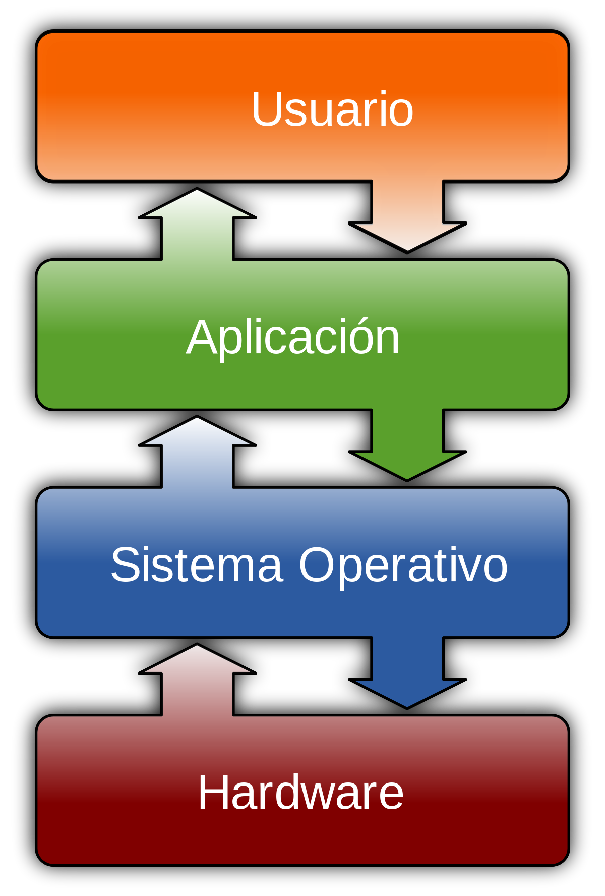
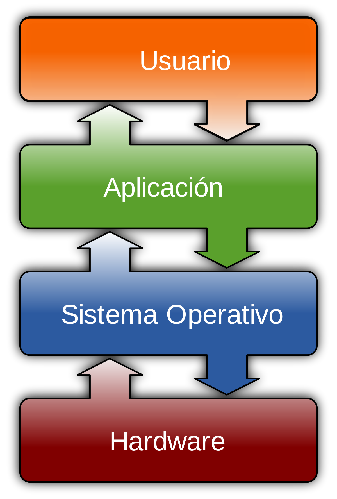

Personaje: Linus Benedict Torvalds (creador de Linux).
Biografía, la ejecución de la idea.
En Finlandia, Linus Torvalds, por entonces estudiante de Ciencias de la Computación de la Universidad de Helsinki, decidió realizar la entonces cuantiosa inversión de 3500 dólares estadounidenses para adquirir un nuevo ordenador con el microprocesador 80386 de Intel, el cual funcionaba a 33 MHz y tenía 4 MB de memoria RAM. El pago lo realizaría a plazos, pues no disponía de tal cantidad de dinero en efectivo.
Normalmente, este ordenador lo usaba para tener acceso por línea telefónica a la red informática de su Universidad, pero debido a que no le gustaba el sistema operativo con el cual trabajaba, denominado Minix, decidió crear uno él mismo. Inicialmente, escribió un programa con lenguaje de bajo nivel prescindiendo de Minix. En los primeros intentos, consiguió arrancar el ordenador y ejecutar dos procesos que mostraban la cadena de caracteres “AAAAABBBBB”. Uno lo utilizaría para leer desde el módem y escribir en la pantalla, mientras que el otro escribiría al módem y leería desde el teclado. Inicialmente, el programa arrancaba desde un disquete.
La siguiente necesidad que tuvo fue la de poder descargar y subir archivos de su universidad, pero para implementar esta funcionalidad en el software emulador era necesario crear un controlador de disco. Así que después de un trabajo continuo y duro, creó un controlador compatible con el sistema de archivos de Minix. En ese momento, se percató de que estaba creando algo más que un simple emulador de terminal, así que, emprendió la tarea de crear un sistema operativo partiendo de cero.
De forma privada, Linus nombraba Linux a su nuevo sistema, pero cuando decidió hacer una presentación pública pensó que era demasiado egocéntrico llamarlo así y propuso llamarlo Freax, aunque después se le siguió conociendo como Linux, práctica que perdura hasta ahora.
Después de anunciar el 25 de agosto de 1991 su intención de seguir desarrollando su sistema para construir un reemplazo de Minix, el 17 de septiembre sube al servidor de FTP proporcionado por su universidad la versión 0.01 de Linux con 10 000 líneas de código. A partir de ese momento Linux empezó a evolucionar rápidamente.


 
